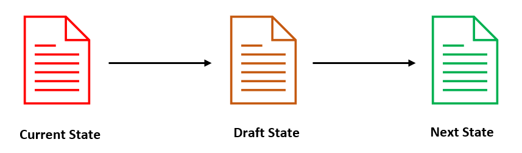
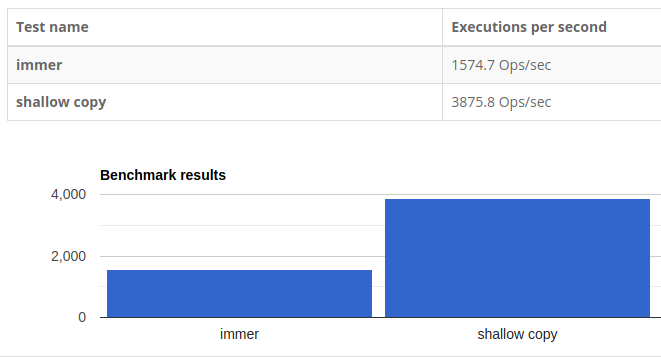

在 React 中，使用不可变状态可以快速且高效地比较更改前后的状态树。因此，每个组件可在执行任何成本很高的 DOM 操作之前，决定是否重新渲染。
我希望你已经知道：
JavaScript 是可变的，我们必须自己实现不可变性。
像 Redux 这样流行的状态管理库也遵循着相同的理念。当我们使用 reducers（译者注：根级的 reduce 函数 reducer 拆分为多个 reducers）时，它期望我们不要改变状态，以避免产生任何的副作用。但是，对于容易出错的大型项目，手动实现不可变性可能不是最佳选择。
幸运的是，有着专门的 JavaScript 库例如 Immer。它们通过设计，实现了状态树的不可变性。
Immer 是一个小型库，它基于写时拷贝（copy-on-write ）机制帮助开发者实现不可变状态，这是一种用于在可修改资源上实现复制操作的技术。
在 Immer 中，主要有三种状态：

从性能的角度来看，与使用 JavaScript 中的 object.assign() 或展开运算符的浅拷贝（Shallow Copy）相比，Immer 表现得可谓是相当的好。如果你有兴趣了解更多关于性能的比较方面的信息，请参考此文：Immer vs 浅拷贝 vs 不可变性的测试。

Immer 还减少了实现上述基准测试结果所需编写的代码量，这也是 Immer 脱颖而出的原因之一。
现在你已经基本了解 Immer，接下来我们来看一下，为什么 Immer 被公认为是解决不可变性的最佳方案之一。
如果你正在处理简单的状态，可能会觉得 Immer 正在使你的代码更复杂。但是，当涉及处理复杂的数据时，Immer 变得非常有用。
为了更好地理解这一点，让我们看看著名的 React reducer 示例：
export default (state = {}, action) => {
switch (action.type) {
case GET_ITEMS:
return {
...state,
...action.items.reduce((obj, item) => {
obj[item.id] = item
return obj
}, {})
}
default:
return state
}
}
上述代码是一个 React-Redux 的典型简化示例，它使用 ES6 展开运算符，并深入到状态树对象的嵌套级别来更新值。我们可以使用 Immer 轻松地降低上述代码的复杂性。
让我们来看看具体如何使用 Immer 降低上述代码的复杂性。
import produce from "immer"
export default produce((draft, action) => {
switch (action.type) {
case GET_ITEMS:
action.items.forEach(item => {
draft[item.id] = item
})
}
}, {})
在这个示例中，Immer 简化了用于扩展状态的代码。你还可以看到它通过使用
forEach循环而不是 ES6 的reduce函数来改变对象。
让我们看另一个示例，将 Immer 与 React 结合使用。
import produce from "immer";
this.state={
id: 14,
email: "stewie@familyguy.com",
profile: {
name: "Stewie Griffin",
bio: "You know, the... the novel you've been working on",
age:1
}
}
changeBioAge = () => {
this.setState(prevState => ({
profile: {
...prevState.profile,
age: prevState.profile.age + 1
}
}))
}
可以通过更改如下所示的状态来重构这段代码。
changeBioAge = () => {
this.setState(
produce(draft => {
draft.profile.age += 1
})
)
}
如你所见，Immer 极大地减少了代码行数并降低了代码复杂度。
Immer 的另一个重要特性是它支持 React Hooks。Immer 使用一个名为 use-immer 的附加库来实现此功能。让我们来看一个示例，以便更好地理解。
const [state, setState] = useState({
id: 14,
email: "stewie@familyguy.com",
profile: {
name: "Stewie Griffin",
bio: "You know, the... the novel you've been working on",
age:1
}
});
function changeBio(newBio) {
setState(current => ({
...current,
profile: {
...current.profile,
bio: newBio
}
}));
}
通过将 useState 替换为 useImmer Hook，我们可以进一步简化 Hooks 示例，还可以通过更改组件状态来更新 React 组件。
import { useImmer } from 'use-immer';
const [state, setState] = useImmer({
id: 14,
email: "stewie@familyguy.com",
profile: {
name: "Stewie Griffin",
bio: "You know, the... the novel you've been working on",
age:1
}
});
function changeBio(newBio) {
setState(draft => {
draft.profile.bio = newBio;
});
}
同样，我们也可以使用 Immer 将 Array 和 Sets 转换为不可变的对象。通过 Immer 创建的 Map 和 Set 会在对象发生改变时会报错，从而使开发者能够意识到对象发生改变的错误。
最重要的是，Immer 不局限于结合 React 使用，你还可以轻松地将 Immer 与原生 JavaScript 结合使用。
除了在维持不可变方面之外，Immer 还可以通过降低代码库的复杂度，帮助我们维护一个编写良好且可读性强的代码库。
根据我对 Immer 的使用经验，我相信 Immer 与 React 结合使用是一个不错的选择。它将简化项目代码，并通过设计帮助管理不可变状态。
你可以通过参考文档找到更多关于 Immer 的信息。
感谢大家的阅读！
如果发现译文存在错误或其他需要改进的地方，欢迎到 掘金翻译计划 对译文进行修改并 PR，也可获得相应奖励积分。文章开头的 本文永久链接 即为本文在 GitHub 上的 MarkDown 链接。
掘金翻译计划 是一个翻译优质互联网技术文章的社区，文章来源为 掘金 上的英文分享文章。内容覆盖 Android、iOS、前端、后端、区块链、产品、设计、人工智能等领域，想要查看更多优质译文请持续关注 掘金翻译计划、官方微博、知乎专栏。